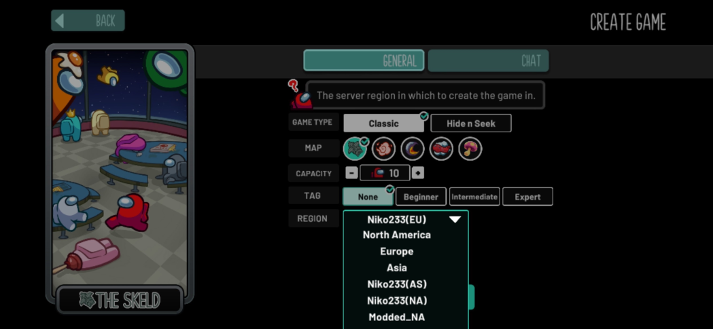

Join Faster
Learn what modded regions are, when you need one, and the quickest way for mobile and PC players to join.
A general how-to page for players and hosts.
Learn what modded regions are, when you need one, and the quickest way for mobile and PC players to join.
Keep a short checklist for updating the mod, enabling autostart, queue tools, and handling known lobby issues.
Learn about adding custom tags to your mod if it supports them, then place the finished file in the correct data folder.
Use the black-screen fix, the Niko region notes, and the log tools before assuming the mod is broken.
New to Modded Among Us? Start here. These are the questions players usually ask first.
Modded Among Us is not just impostors versus crewmates anymore. Games can include impostors, crewmates, coven roles, neutrals, and add-ons all in the same match.
Depending on the mod, you may also get access to mini-games like FFA.
The five big role groups to remember are Impostors, Crewmates, Neutrals, Coven, and Add-ons. That is why kills, votes, and suspicious behavior do not always mean the same thing they do in vanilla.
In modded Among Us, crew can kill too.
For standard host-only lobbies, the host is the one who must have the mod installed. Players can usually join without installing the mod themselves.
However, some mods like Town of Us Mira may require players to install the mod too. Those can be installed on PC or Android with Starlight Launcher.
A modded region is a non-Innersloth region that helps mods run when the official anti-cheat breaks lobbies. If you are experiencing host errors like banned for hacking or repeated kicks and the issue is widespread, swapping to a modded region may be a good alternative.
Niko regions are commonly suggested for host-only mods like EHR or Project Lotus. More general modded regions are commonly suggested for client-required mods like Town of Us.
These regions can be installed on mobile, tablet, or PC.

If you already have the mod installed, modded regions typically come along with the mod. If not, visit
au.niko233.top and run the
customserver.bat file.
Error or domain issue?
BepInEx/plugins.These are the most useful basics for regular players:
/m or /cmd m to read your role and add-on details./r to list active roles, or /r [role] to read one role./id or /cmd id to see player IDs./kc or /cmd kc to see how many killers are still alive./death or /cmd d after death to see death information./w [ids] [message] for meeting whispers when your role allows it.
In meetings, use the /cmd prefix for guessing, whispering, judging, and other hidden role
actions so you do not expose yourself in public chat.
/cmd id to find the player's ID./cmd bt [ID] [RoleName].
Typically the mod will show a player's ID on their meeting card, but if it does not, you can run
/id beforehand to get it.
Example: Sarha is Dictator and I am an impostor, so I want to remove her before she removes me.
I would use /bt 0 dictator.
Modded clients also have a guesser UI in most mods that makes guessing easier, so check for that in meetings.
There are a few reasons. Experienced players learn common role tells over time, especially when a newer player gives away what they are doing.
Even if you never say your role name out loud, people can infer it from system messages, how you ask questions, or what commands you use. Something like asking how to get a player's ID and then immediately using a meeting command can give you away.
If you need help, it is usually safer to run /m in game to learn your role, or ask whether
guessing is on before you start doing obvious role-specific actions.
If your role color matches another visible player, you are often on the same team. Do not guess or kill teammates unless your instructions say otherwise.
You may also see icons next to someone's name. You can run /icons in game to check what
they mean. In some cases you could be somebody's lawyer and need to protect them, or they could be an
Executioner's target.
Do not leave. Some roles can still win after death, some ghost roles activate after death, and ghost chat is still useful. Leaving early can also make you miss role information that matters later.
/m in game before asking public role questions. It is one of the easiest ways to avoid getting guessed early.Information taken and/or inspired by @RoHodor's EHR guide.
These are the most common questions for hosts who use mods.
Download the newest mod DLL and replace the old one in Among Us/BepInEx/plugins.
For example, with EHR test builds:
BepInEx.plugins.EHR.dll.EHR.dll in./thread rename to rename a lobby thread./thread close to archive and lock a lobby post./code set to set the private code./queue toggle to turn queue on or off./queue next to ping the next players and send the code./queue remove to remove someone without pinging them./code remove then /code set to change the code./blacklist toggle (member) to add someone to the blacklist.More advanced queue settings can be found on mauq.xyz.
The current workarounds are:
Use these tools before guessing at the problem:
These are the commands most worth memorizing for basic play, meetings, and hosting. The full command list is much longer. These are general commands, though some are more EHR-specific.
/id show player IDs
/r show active roles
/r [role] show one role description
/h or /help list commands
/template send a saved template
/color [color] change bean color
/tpout leave the ship area
/tpin return to the ship
/l or /lastresult view the last game
/win view the last winners
/cmd m read your role details
/cmd kc see how many killers remain
/cmd bt [id] [role] guess a role
/w [ids] [message] whisper privately
/cmd d see death info after death
/setrole or /setaddon set next-game roles
/combo force or ban role plus add-on combos
/readycheck run an AFK check
/draftstart start role drafting
/addtag add a host-managed tag
These are some of the most commonly asked support questions.
Steam: open Among Us in Steam, go to Properties, then Betas, and choose public-previous.
After downgrading on Steam or Epic, you should delete
%userprofile%\AppData\LocalLow\Innersloth\Among Us\settings.amogus to avoid black screens.
If you use Steam, be sure to copy your newly downgraded Among Us files into the mod folder that you use.
Use au.niko233.top.
Niko233.me now causes immediate kicks because of the domain migration check.
Guest accounts are not supported. An account is required.
Try using Cloudflare WARP for stability.
When you click Create a Game, check how many players you have set and make sure it is
15 or under. You can also open a local lobby and check how many impostors you have set.
Requirements: own Among Us on Steam and have some patience.
sudo apt update, sudo apt install pipx, then pipx ensurepath.pipx install protontricks.protontricks 945360 winhttp.WINEDLLOVERRIDES="winhttp=n,b" %command%.The first launch after setup can take 2 to 3 minutes.
Common errors and their usual causes:
Useful links for everything modded related.
This FAQ is a condensed quick-reference based on the notes you provided. Exact commands, file paths, and region behavior can vary by mod, platform, and version.